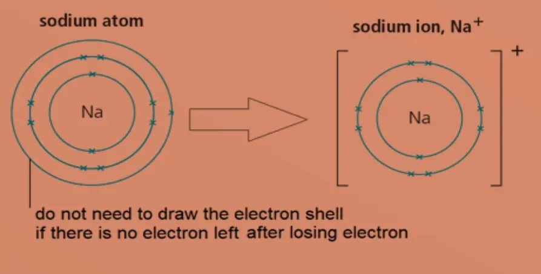
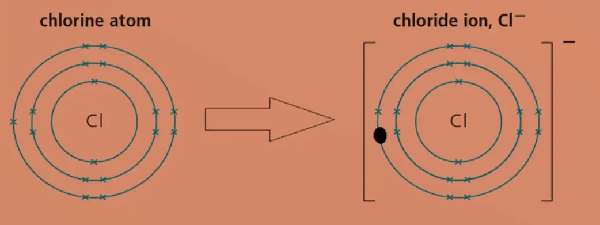
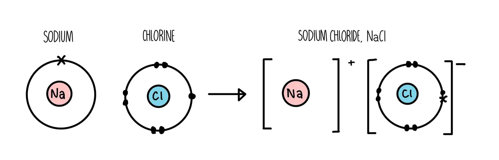
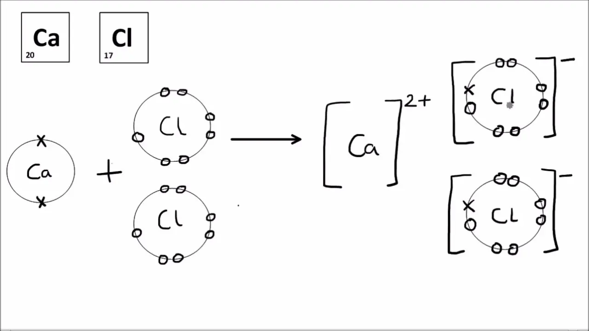

What you need to know (Edexcel IGCSE specification 1.37–1.43)
- 1.37understand how ions are formed by electron loss or gain
- 1.38know the charges of these ions: metals in Groups 1, 2 and 3; non-metals in Groups 5, 6 and 7; Ag+, Cu2+, Fe2+, Fe3+, Pb2+, Zn2+; hydrogen (H+), hydroxide (OH−), ammonium (NH4+), carbonate (CO32−), nitrate (NO3−), sulfate (SO42−)
- 1.39write formulae for compounds formed between the ions listed above
- 1.40draw dot-and-cross diagrams to show the formation of ionic compounds by electron transfer, limited to combinations of elements from Groups 1, 2, 3 and 5, 6, 7 (only outer electrons need to be shown)
- 1.41understand ionic bonding in terms of electrostatic attractions
- 1.42understand why compounds with giant ionic lattices have high melting and boiling points
- 1.43know that ionic compounds do not conduct electricity when solid, but do conduct electricity when molten and in aqueous solution
Ions & charges 1.371.38
Atoms are most stable when they have a full outer shell of electrons. Metals (with 1–3 outer electrons) achieve this by losing electrons; non-metals (with 5–7 outer electrons) achieve this by gaining electrons.
An ion is a charged atom or group of atoms formed when electrons are lost or gained. The number of electrons lost or gained gives the size of the charge: lose 2 electrons → 2+; gain 2 electrons → 2−.
Cations (positive)
Na+ Mg2+ Al3+
Formed when atoms lose electrons, so they have more protons (+) than electrons (−). Usually metals. (Cat-ions are paw-sitive!)
Anions (negative)
Cl− O2− N3−
Formed when atoms gain electrons, so they have more electrons (−) than protons (+). Usually non-metals.


Charges from the Periodic Table
For Groups 1, 2, 3, 5, 6 and 7, you can work out the ion charge straight from the group number:
| Group | 1 | 2 | 3 | 5 | 6 | 7 |
|---|---|---|---|---|---|---|
| Charge | 1+ | 2+ | 3+ | 3− | 2− | 1− |
| Example | Na+ | Mg2+ | Al3+ | N3− | O2− | Cl− |

Compound ions & transition-metal ions to learn
Whole groups of atoms can carry a charge too — for example, hydroxide (OH−) is an O joined to an H with 1 extra electron. These ions do not follow a simple group rule, so you need to memorise them:
| Positive ion | Charge | Formula |
|---|---|---|
| Silver | 1+ | Ag+ |
| Hydrogen | 1+ | H+ |
| Ammonium | 1+ | NH4+ |
| Copper(II) | 2+ | Cu2+ |
| Zinc | 2+ | Zn2+ |
| Lead(II) | 2+ | Pb2+ |
| Iron(II) | 2+ | Fe2+ |
| Iron(III) | 3+ | Fe3+ |
| Negative ion | Charge | Formula |
|---|---|---|
| Nitrate | 1− | NO3− |
| Hydroxide | 1− | OH− |
| Carbonate | 2− | CO32− |
| Sulfate | 2− | SO42− |
Positive ions: "small hen and / cool zebra ina lemon – / illegal!" → 1+ (Ag, H, NH4) · 2+ (Cu, Zn, Fe(II), Pb) · 3+ (Fe(III)).
Negative ions: "No hex! / Cake sale!" → 1− (NO3−, OH−) · 2− (CO32−, SO42−).


Losing electrons gives a POSITIVE charge — NOT a negative one! Electrons are negatively charged, so losing negative charges leaves more positive protons than electrons.
Quick check
0 / 2 doneIonic or covalent? 1.371.41
You can spot the type of bonding straight from the types of elements in the compound:

| Feature | Ionic bond | Covalent bond |
|---|---|---|
| Elements | Metal + non-metal | Non-metal + non-metal |
| What electrons do | Transferred from metal to non-metal | Shared in pairs between atoms |
| Particles formed | Oppositely charged ions (+ and −) | Neutral atoms joined into molecules (or giant covalent network) |
- Magnesium oxide (MgO): Mg is a metal (Group 2), O is a non-metal (Group 6) → ionic (electrons transferred).
- Carbon dioxide (CO2): Both C and O are non-metals → covalent (electrons shared).
Now you try: are KBr, H₂O, and CaCl₂ ionic or covalent?
H2O (hydrogen + oxygen) = non-metal + non-metal → covalent.
CaCl2 (calcium + chlorine) = metal + non-metal → ionic.
Quick check
0 / 2 doneDot-and-cross diagrams 1.40
We show ionic bonding with outer-shell electrons only. Use crosses (×) for one atom's electrons and dots (●) for the other's so it is obvious which electrons were transferred.
- Put square brackets around every ion, with its charge at the top right (e.g. [Na]+, [Ca]2+).
- Show no outer shell (or an empty outer shell) on the metal cation — it has given away its outer electrons.
- Show a full outer shell of 8 electrons on the non-metal anion, using the metal's symbol (×) for the transferred electron(s).
- Count outer electrons: Calcium (Group 2) has 2 outer electrons to lose. Each chlorine (Group 7) has 7 outer electrons and needs 1 more.
- Balance the transfer: One Ca atom gives 1 electron to each of two Cl atoms.
- Draw the ions: One [Ca]2+ ion and two [Cl]− ions (each Cl has 7 dots and 1 cross in its outer shell).
Now you try: describe the ions in sodium oxide (Na₂O).


Interactive explorer — practise 9 ionic compounds
Pick a compound, try sketching it on rough paper first, then step through the electron transfer to check your brackets, charges and electron counts.
Double Award students need to draw dot-and-cross diagrams for ionic compounds formed from Groups 1, 2, 3 and 5, 6, 7 (such as NaCl, NaF, MgO, CaCl2 and Na2O).
- Overlapping the circles — overlapping shells mean shared (covalent) electrons! Ionic ions must be separate inside square brackets.
- Forgetting brackets or charges — without [ ] and the charge, examiners cannot tell it is an ion.
- Drawing only one Cl for CaCl2 or one Na for Na2O — total electrons lost must equal total electrons gained!
Quick check
0 / 2 doneGiant ionic lattices & melting points 1.411.42
Ionic compounds do not exist as tiny separate pairs of ions. Instead, millions of positive and negative ions pack tightly into a repeating 3D crystal structure called a giant ionic lattice.
An ionic bond is the strong electrostatic attraction between oppositely charged ions. Because there are huge numbers of these strong attractions in all directions throughout the giant ionic lattice, lots of energy is needed to overcome them — giving ionic compounds very high melting and boiling points.


Melting points compared
| Substance | Structure | Melting point / °C |
|---|---|---|
| Graphite C | Giant covalent | ≈ 3650 (sublimes) |
| Diamond C | Giant covalent | ≈ 3550 |
| Magnesium oxide MgO | Ionic | 2852 |
| Silicon dioxide SiO2 | Giant covalent | 1710 |
| Sodium chloride NaCl | Ionic | 801 |
| Calcium chloride CaCl2 | Ionic | 772 |
| Water H2O | Simple molecular | 0 |
| Carbon dioxide CO2 | Simple molecular | −78 (sublimes) |
| Methane CH4 | Simple molecular | −182 |
Magnesium oxide is made of Mg2+ and O2− ions, whereas sodium chloride has Na+ and Cl− ions. Greater charges mean much stronger electrostatic attractions, so even more energy is needed to melt MgO (2852 °C vs 801 °C).
NEVER write "intermolecular forces" or "molecules" when explaining ionic melting points. Ionic compounds contain ions in a giant ionic lattice, held by strong electrostatic attraction between oppositely charged ions.
Quick check
0 / 2 doneElectrical conductivity 1.43
For any substance to conduct electricity, it must contain charged particles that are free to move. Test solid, molten and dissolved ionic compounds below:
| State | Conducts? | Explanation |
|---|---|---|
| Solid | No | Ions are held in fixed positions in the giant lattice and cannot move. |
| Molten (melted) | Yes | The lattice breaks down so ions are free to move and carry charge. |
| Aqueous (dissolved in water) | Yes | Water separates the ions so ions are free to move and carry charge. |
Compare ionic solids, solutions, covalent liquids and graphite in the test circuit:
Double Award students need to explain why ionic compounds conduct when molten or dissolved in water, but not when solid.
NEVER write "electrons are free to move" for an ionic compound! In molten or dissolved ionic compounds, it is the IONS that move and carry charge — writing "electrons move" scores 0 marks.
Quick check
0 / 2 doneWriting ionic formulae 1.39
Every ionic compound is electrically neutral overall — the total positive charge must exactly cancel the total negative charge to give 0.
- Calcium chloride: Ions are Ca2+ and Cl−. You need two Cl− ions (2 × 1− = 2−) to cancel one Ca2+ (2+) → CaCl2.
- Aluminium oxide: Ions are Al3+ and O2−. Lowest common multiple of 3 and 2 is 6: 2 × 3+ = 6+ and 3 × 2− = 6− → Al2O3.
- Barium nitrate: Ions are Ba2+ and NO3−. You need two nitrate ions — wrap a compound ion in brackets whenever you need more than one → Ba(NO3)2.
Now you try: write formulae for magnesium hydroxide and sodium carbonate.
Sodium carbonate: Na+ and CO32− → need 2 Na+ → Na2CO3 (only 1 CO32−, so no brackets).
Interactive formula builder
Practice — write all 15 formulae
- Sodium and chlorine
- Magnesium and oxygen
- Calcium and fluorine
- Potassium and bromine
- Aluminium and oxygen
- Lithium and nitrogen
- Barium and sulfur
- Sodium and sulfur
- Magnesium and chlorine
- Calcium and iodine
- Aluminium and fluorine
- Potassium and oxygen
- Lithium and bromine
- Barium and nitrate (NO3−)
- Ammonium (NH4+) and chlorine
Show all 15 answers
- NaCl
- MgO
- CaF2
- KBr
- Al2O3
- Li3N
- BaS
- Na2S
- MgCl2
- CaI2
- AlF3
- K2O
- LiBr
- Ba(NO3)2
- NH4Cl
- Leaving charges in the final formula — write MgCl2, never Mg2+Cl2−.
- Missing brackets around compound ions — write Ba(NO3)2, never BaNO32.
- Forgetting to change the non-metal ending to -ide in the name (sodium chloride, not sodium chlorine).
Quick check
0 / 2 doneEnd-of-topic test
Test yourself without looking back! Answer the multiple-choice questions, write your own long answers, then open the mark schemes and tick off every mark you earned.
Diagram questions
Click an answer, then press ↻ Another example to generate a fresh question.